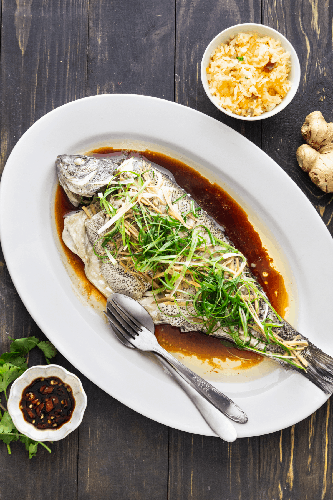

Steamed Fish

Description
Cantonese steamed fish is a traditional, simple dish often served as one of the final courses in a Chinese wedding banquet
Ingredients
- 2 scallions
- 2 tablespoons ginger
- 1 small bunch cilantro
- 1 ½ tablespoons light soy sauce
- 1/8 teaspoon salt
- 1/8 teaspoon sugar
- 2 tablespoons hot water
- 10 ounce fillet of delicate white fish
- 2 tablespoons vegetable oil
Steps
- Cut the scallions into 2-inch lengths, and cut the pieces in half lengthwise. Julienne them thinly. Thinly slice about 15g of ginger, and julienne them. Give the cilantro a rough chop. Set the aromatics aside.
- Combine the light soy sauce, salt, sugar and hot water in a small bowl and mix until the sugar and salt are dissolved. Set aside.
- Prepare your steaming set-up, and fill with 1-2 inches of water. Bring to a boil.
- Rinse your fish fillet, and carefully lay it on an oblong heat-proof plate that will fit into your wok or steaming setup. Carefully place it in the steamer, and adjust the heat to medium. The water should be at a slow boil that generates a good amount of steam, but not so high that the water evaporates too quickly.
- Cover and steam for 7-10 minutes depending upon the size and thickness of your fish fillet. If you have extremely small, thin fillets (half an inch), cook for 4-5 minutes. Check for doneness using a butter knife. If it falls easily through the thickest part of the fillet to the bottom of the plate, the fish is done.
- Turn off the heat, and carefully drain any liquid on the plate. Spread about ⅓ of the scallions, ginger, and cilantro on the steamed fish (alternatively, you can wait to do this AFTER adding the sauce).
- To make the sauce, heat a wok or small saucepan to medium high heat, and add 2 tablespoons vegetable oil. Add the remaining ⅔ of the ginger, and fry for 1 minute. Add the white parts of the scallions and cook for 30 seconds.Then add rest of the scallions and cilantro. The mixture should be sizzling.
- Add the soy sauce mixture. Bring the mixture to a bubble, and cook until the scallions and cilantro are just wilted, about 30 seconds.
- Pour this mixture over the fish. If you prefer to add the raw aromatics after adding the sauce, you can do so now, and heat an additional 1 tablespoon of vegetable oil to pour over the raw aromatics. Serve immediately!